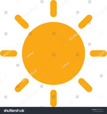

Lato
Lato was Designed by Łukasz Dziedzic
License
- font-family: 'IBM Plex Sans', sans-serif;
- font-family: 'Inter Tight', sans-serif;
- font-family: 'Oxygen', sans-serif;
- font-family: 'Roboto', sans-serif;
CSS rules to specify families

- font-family: 'IBM Plex Sans', sans-serif;
- font-family: 'Inter Tight', sans-serif;
- font-family: 'Oxygen', sans-serif;
- font-family: 'Roboto', sans-serif;
Typography
Typography is everywhere we look. It's in the books we read, on the websites we visit, even in everyday life—on street signs, bumper stickers, and product packaging. But what exactly is typography? Simply put, typography is the style or appearance of text. It can also refer to the art of working with text—something you probably do all the time if you create documents or other projects for work, school, or yourself.